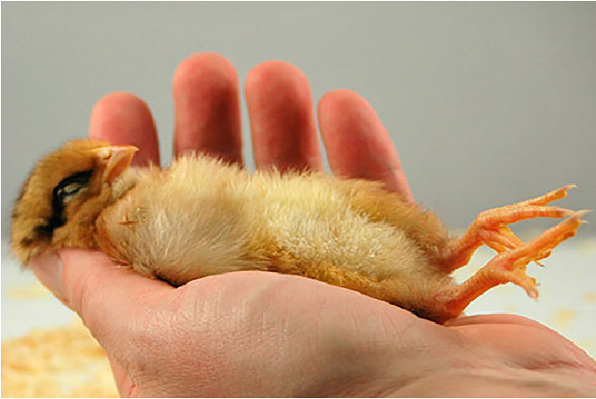

As variações de temperatura
A grande maioria dos galpões existentes no Brasil são abertos, e sofrem diretamente com as alterações da
temperatura ambiente. Em regiões onde durante todo o ano a temperatura ambiente é alta, as poedeiras
acostumam com a temperatura alta. Principalmente nas regiões sul e sudeste que existe uma grande variação
da temperatura entre o inverno e o verão, na fase de transição do frio para o calor, a mortalidade de aves
é alta.
Os efeitos da umidade de ar e a temperatura sobre as galinhas
A dificuldade dos frangos de corte, em manter o controle da temperatura corporal, pode ser explicada
pelo fato de esses animais serem selecionados para ter rápido crescimento e acumulo de peso em um curto
espaço de tempo. Esse melhoramento intenso deixou as aves deficientes principalmente no sistema respiratório.
Desta maneira, tão importante quanto à temperatura é o controle da umidade relativa do ar, devido a esta ser
uma variável de difícil controle e de extrema importância para as aves.
Por que colocar um sistema de monitoramento em avícolas ?
Devido à grande perda de produção de frangos de corte na região nordeste do país por falta de controle
e monitoramento da temperatura e umidade decidimos criar uma solução de baixo custo e muito eficiente
usando a tecnologia a nosso favor para a redução de perda e assim obter o maior lucro de sua produção.
Nosso objetivo é reduzir as perdas na produção de aves e ovos, com o controle de temperatura e umidade.

O problema
O controle da umidade dentro dos galpões é dificultado pelo
uso de nebulização nos galpões. Segundo Tinôco (1998),
um ambiente é considerado confortável para aves adultas
quando apresenta temperaturas de 16 a 23ºC e umidade
relativa do ar de 50 a 70%. Entretanto, dificilmente
estes valores são encontrados em condições comerciais
de produção no Nordeste. Assim, a nebulização é utilizada
para ajudar a amenizar a temperatura do ar dentro dos
galpões e ajudar no conforto térmico das aves, que são
animais que exigem temperaturas mais amenas na fase final
de sua criação. Porém, o excesso de nebulização pode causar
estresse por frio, pode molhar demasiadamente a cama das
aves, gerando desconforto aos animais, atrapalhar a respiração
e causar doenças ou até a morte.
A Solução
Ao aplicar nosso sistema de monitoramento desenvolvido
para funcionar 24h em tempo real, ó usuário terá todas
as informações sobre sua granja onde será informado a
temperatura e a umidade ambiente. O usuário será alertado
caso a temperatura e umidade não estejam nos parâmetros
adequados, podendo assim amenizar o problema a tempo.